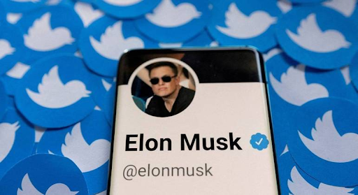
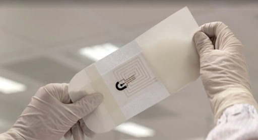
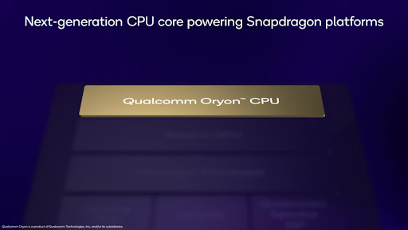

Twitter confirma que vai cobrar taxa para verificar contas
Com a direção de Elon Musk, algumas mudanças estão sendo feitas na plataforma, o Twitter deverá cobrar por verificação de usuários. O serviço de verificação de conta pode custar R$ 103 por mês.
A produção de Iphones pode cair até 30%. Duas fábricas da Foxconn enfrentam quarentenas na China
A produção de Iphones, pode cair até 30% em uma das maiores fábricas do mundo no próximo mês, devido ao aperto das restrições sanitárias contra a Covid-19 na China.
Tela flexível
Podendo ser enroladas e dobradas como um pergaminho, sem que a imagem e texto fiquem distorcidos, qualidade e visualização de fotos sejam cada vez mais nítidas, praticidade de “dobrar” o aparelho e colocá-lo facilmente em um bolso ou carteira de mão.
Rede social enfrentou problemas nesta segunda-feira (31)
Na manhã desta segunda-feira (31), os usuários do Instagram fizeram diversas reclamações sobre a rede social. Pelo mundo todo, os internautas tiveram as contas apagadas e algumas pessoas perderam diversos seguidores.
IBM lança seu mais poderoso computador quântico com 433 qubits
A IBM lançou nesta quarta-feira (9) seu mais poderoso computador quântico, chamado de “Osprey”, e com poder de processamento de 433 qubits, três vezes mais que a máquina “Eagle” anunciada ano passado
O número de qubits, ou bits quânticos, é uma indicação do poder de processamento do computador que usa a mecânica quântica, embora diferentes fabricantes façam alegações distintas sobre o poder de processamento de seus qubits, que podem ser criados de várias formas.

Headset VR criado por cofundador da Oculus é capaz de matar o jogador
Foi implantado no aparelho três cargas explosivas, que ficam localizadas na altura da testa do jogador e seriam facilmente capazes de explodir seu crânio logo após uma tela de ''Game Over''. Certamente essa atmosfera de correr um risco real de vida durante uma partida de videogame.

Estudantes criam curativo inteligente que monitora processo de cicatrização de feridas.
Tecnologia tem um dispositivo impresso no tecido e uma antena que se comunicará com um celular ou tablet próximo à ela.
Carros Autônomos
Sem motorista humano, os carros serão mais seguros e confortáveis, especialmente, em viagens longas, a tecnologia desenvolvida para estes veículos autônomos incluindo, controle de cruzeiro adaptável, frenagem de colisão direto automática, estacionamento, automático, piloto automático e assistência na faixa de rodagem.
Bossanova entra no equity crowdfunding, Braskem inaugura hub de inovação
Braskem lançou o Oxygea, um hub para startups que contará com o investimento de cerca de US$ 150 milhões para o desenvolvimento de novos negócios com viés voltado à sustentabilidade. O projeto vem do desejo da empresa de se aproximar mais do ecossistema de inovação – a companhia conta também com o Braskem Labs, programa de aceleração de startups.
Black Friday: iPhone 11 é o celular mais clicado no Google Shopping
O Google divulgou, nesta quarta-feira (16), um levantamento mostrando que o iPhone 11 é o smartphone mais clicado pelos brasileiros visando a Black Friday no Google Shopping. De acordo uma outra pesquisa encomendada pela empresa, 88% dos brasileiros que querem comprar algo na data promocional já estão pesquisando informações de celulares.
Materia Oficial
Reconhecimento facial para pagamento de compras e serviços chega ao Brasil
Uma das vantagens do reconhecimento facial é diminuir o contato com máquinas de cartão e outros equipamentos, uma característica de valor em tempos de distanciamento social. É simples: o usuário baixa um aplicativo, cadastra um cartão de crédito ou débito e tira alguns autorretratos.

Qualcomm revela CPU Oryon para PCs e promete avanços no Windows.
Enquanto o Snapdragon 8 Gen 2 é a grande estrela da Qualcomm em seu evento anual, a empresa reservou espaço para novidades voltadas aos computadores. A companhia anunciou que está trabalhando em uma nova CPU voltada para PCs que se chama Oryon.
Mais um celular da China, mas esse terá fabricação nacional. Infinix Hot 11 Play é homologado no Brasil.
Aparelho lançado no ano passado, o Infinix Hot 11 Play acaba de ser homologado no Brasil. O aparelho não só já pode ser vendido aqui como terá construção nacional em alguns dos seus modelos.
WhatsApp lança no Brasil recurso que permite localizar lojas e comprar produtos dentro do app; veja como usar.
A Meta anunciou nesta quinta-feira (17) que o WhatsApp permitirá que consumidores brasileiros encontrem estabelecimentos, conversem com o lojista e fechem compras diretamente pelo aplicativo de mensagens. O Brasil é o primeiro país a ganhar a jornada integral de compra no mensageiro.